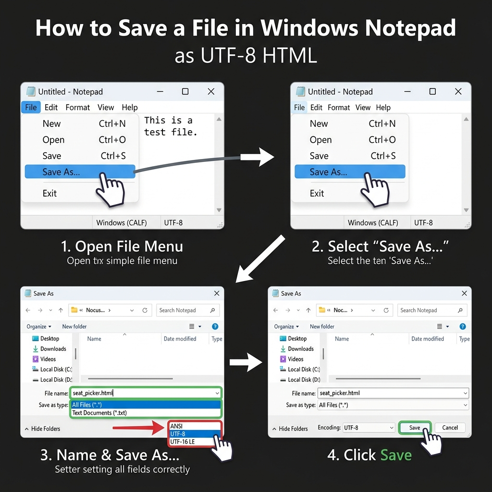

전문적 학습 공동체 연수
AI 플랫폼 활용 바이브 코딩으로 만드는
AI 플랫폼 활용 바이브 코딩으로 만드는
나만의 학급운영 프로그램
"교직 경력은 많아도 코딩은 처음이신가요?"
개발 환경 설치도, 프로그래밍 언어 공부도 필요 없습니다.
오늘 연수에서는 교사의 생각(말)을 AI에게 건네어 실시간으로 작동하는 학급운영 도구를 만드는 바이브 코딩(Vibe Coding)을 배워봅니다.
바이브 코딩 이해하기
코딩 한 줄 몰라도 가능합니다!
코딩 한 줄 몰라도 가능합니다!
바이브 코딩(Vibe Coding)이란?
- 개념: 복잡한 코드 작성 대신, AI에게 자연어로 원하는 기능과 형태를 요구해 프로그램을 만드는 개발 방식
- 교사의 역할: 코드를 짜는 '개발자'가 아닌, 아이디어를 구상하고 검수하는 '기획자 및 지시자'가 됩니다.
- 어떻게 작동하나요?:
1) "자리 배치도를 만들어줘" 라고 제미나이에 말하기
2) 제미나이가 준 코드를 메모장에 복사-붙여넣기
3)seat.html로 저장하고 더블클릭하면 끝!
준비하기
제미나이(Gemini) 무료 버전 준비 및 프롬프팅 요령
가장 대중적이고 빠른 Google Gemini(무료 버전)를 사용합니다.
- 브라우저에서 gemini.google.com에 접속 및 로그인합니다.
- AI에게 지시할 때 꼭 들어가야 하는 4대 핵심 요소:
- 구조: "단 하나의 HTML 파일로 만들어줘" (매우 중요!)
- 기능: "학생 명단을 입력하고 룰렛을 돌려 무작위로 뽑는 기능"
- 스타일: "파스텔톤의 세련된 디자인, 보기 좋은 폰트 적용"
- 저장: "로컬저장소(localStorage)에 학생 명단이 유지되게 해줘"
코드 실행 방법
컴퓨터에 프로그램 저장 및 실행하기
AI가 준 코드는 다음과 같이 저장하여 실행합니다.
- 제미나이가 준 코드 상단의 [복사] 버튼을 누릅니다.
- 보조프로그램에서 [메모장(Notepad)]을 켭니다.
- 코드를 붙여넣고 [다른 이름으로 저장]을 누릅니다.
- [파일 형식]을 반드시 '모든 파일 (*.*)'로 설정합니다.
- 파일명 끝에
.html을 붙이고 인코딩을 'UTF-8'로 지정한 뒤 저장합니다.

실습 1단계
실습 예제 ① : 드래그 앤 드롭 자리 배치도
선생님들이 매달 겪는 스트레스 1위, 자리 바꾸기!
- 기능적 핵심: 가로/세로 좌석 수를 교실에 맞춰 조정, 학생 명단을 입력해 한 번에 셔플
- 바이브 강점: 마우스로 명단 카드를 드래그 앤 드롭(Drag & Drop)하여 앞뒤 자리를 직접 눈으로 보며 조정 가능
- 실습 목표: 상단 탭의 [실습 워크벤치]에서 '자리 배치도' 프롬프트를 복사하여 제미나이에 붙여넣고 작동 버전을 만들어보세요!
실습 2단계
실습 예제 ② : 모둠 구성 & 룰렛 발표자 추첨기
수업 몰입도를 올리는 게이미피케이션(Gamification) 도구!
- 기능적 핵심: 4명씩 6개 모둠 등 원하는 비율로 모둠 자동 편성, 원형 룰렛이 돌며 효과음과 함께 당첨자를 선정
- 바이브 강점: 별도의 오디오 파일이나 라이브러리 없이 브라우저 내장 음성 합성(TTS)을 활용하여 당첨 학생 이름을 읽어주고 화면 가득 폭죽(Confetti)이 터지는 애니메이션 탑재
문제 해결 (Vibe Loop)
에러 발생 시 대처법: "AI와 대화로 해결하기"
에러가 나거나 디자인이 맘에 안 들면 주저하지 말고 다시 채팅 창에 물어보세요.
- 한글이 깨질 때: "한글 폰트가 정상적으로 표시되도록 UTF-8 인코딩 선언 태그를 넣어주고 폰트 패밀리를 깔끔하게 고쳐줘."
- 특정 기능이 멈췄을 때: "룰렛 돌리기 버튼을 클릭해도 아무런 작동이 안 돼. 개발자 도구 에러 로그 없이 정상 작동하게 코드를 다시 짜줘."
- 디자인 변경을 원할 때: "초등학생 교실에 어울리도록 파스텔톤의 노란색과 민트색 위주의 테마로 밝게 꾸며줘."
연수 정리
바이브 코딩으로 교사의 날개를 다세요!
오늘 우리는 프로그래밍 기초 지식 없이 교실에 꼭 필요한 MVP 프로그램 3종을 구상하고 생성하는 실습을 진행했습니다.
- 앞으로의 과제: 1인 1역 현황판, 오늘 청소 담당 룰렛, 학급 칭찬 온도계 등 우리 반만의 색다른 프로그램을 직접 제작해 보세요.
- 가장 중요한 태도: 완벽한 코딩 지식보다 '내가 원하는 기능이 무엇인지 상세히 문장으로 정리하는 논리적 사고력'이 핵심입니다.
수고하셨습니다! 이제 상단 [실습 워크벤치] 탭을 눌러 실습을 직접 시작해 보시기 바랍니다.